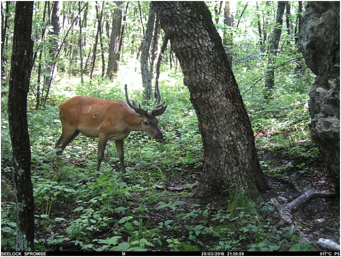

25. ПРИРОДНЫЙ ЗАКАЗНИК "ЧУРКИ"
Заказник "Чурки", расположен на хребте Чурки и прилегающей Средне-Амурской низменности, занятой водно-болотными угодьями.
📌 Хребет Чурки - живописный горный изолят, имеющий одноимённую высотную точку - гору Чурки (634,7 м).
🦌🐗 На территории заказника "Чурки" сосредоточены места обитания, зимовки и воспроизводства ценных видов охотничьих животных: изюбря, кабана, медведя и косули. Проходят миграционные пути хищных птиц: беркута, скопы, амурского кобчика. Произрастают редкие и исчезающие виды растений.
📌 По своему профилю заказник предназначен для сохранения и восстановления природных ландшафтов и их компонентов и поддерживает общий экологический баланс региона.
